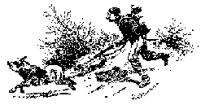

Phil On Picket In Dixie

One day when Phil on picket guard
Was thinking how soldiers fared so hard.
And hard tack met with some derision
Outside the line something met his vision.
Sometimes it would halt and raise its head,
And then proceed with cautious tread,
Just what it was Phil could not tell,
And so it caused his heart to swell,
Was it possibly a wily foe,
Crawling through weeds cautious and slow,
Seeking to spring upon poor Phil,
His patriotic blood to spill?
Says Phil there's danger coming nigh,
And, oh the blood in Phil's dark eye,
"Who comes there," said he, "my larky,
A rebel foe or a friendly darky?"
It proved to be a hungry swine,
Making an effort to cross the line,
And as Phil stood there at arms aport,
Old Swiney answered with a snort,
Then rushing on came the savage swine,
When Phil demanded the countersign,
The time that try men's souls had come,
And sudden thoughts of friends and home,
And though his face was somewhat paled,
Brave Philip's courage never failed,
He fiercely charged at the double quick,
When swiney felt the bayonet prick,
Through his heart went the murderous steel,
When swiney gave a hideous squeal,
The blood flowed freely from his side,
And swiney tumbled down and died.
Now other thoughts swelled Philip's heart,
"Of this fat swine I'll have a part,
That dared to cross the picket line,
And never give the countersign."
Then calling a comrade to his side
They stripped Old Swiney of his hide
And thought no butcher ever beat
Such time in changing hog to meat.
But another thought crossed Philip's mind,
In the Regulations can I find
If hogs have rights that men have not,
And may cross the line and not be shot,
Or being stabbed with a bayonet
When over the line they try to get.
If an officer should pass this way
I fear the devil will be to pay,
And a poor high private might be shot
For doing what he oughter not.
"'Gainst shooting hogs in the picket line
There is an order - but this old swine
Didn't come to his death that way,
And that is what I'll have to say."
So away he went with the meat of the hog.
And hid it behind a cottonwood log.
But as it was nearly dinner time,
Phil thought he could worse the crime,
And Old Swiney was scarce done dying
'Till Phil had some of the meat on frying.
While thus engaged in frying meat
Lieutenant Burt came to his beat,
Being Officer of Pickets that day
To visit the posts he came that way,
And Captain Stewart also came,
Field Officer, to see that no blame
To the Picket guards could be attached,
And that the lines were strictly watched.
And now thought Phil, things look quite blue,
They'll smell the meat and taste it too.
They'll say it's fresh as round they're prying,
If I say it ain't, they say I'm lying.
Phil asked the officers to eat,
They relished well the good fresh meat,
Phil and his comrades too ate hearty,
But sly winks passed around the party
At last said the captain to the boys,
"This meat seems fresh but I heard no noise,
As I have passed around this way,
I've heard no musket shot to-day-
The meat is good, I guess all's right,
Could you send me up a piece to-night?"
"All right," said Phil, his face all grease,
"Certainly, Cap, you shall have a piece."
Phil kept his word and nothing shorter,
And took the Captain a good hind quarter.
The officers gone, the boys laughed at the joke,
How nicely Phil kept the "pig in the poke,"
And he'll never forget his charge on the swine,
That attempted to cross the picket line.
The above was written on the picket line at Camp Steele, opposite Helena, Ark., in 1863, just before going down with the big fleet of transports and gunboats to attack Vicksburg.
From: War Songs Poems and Odes by R.W. Burt
Peoria Illinois 1909